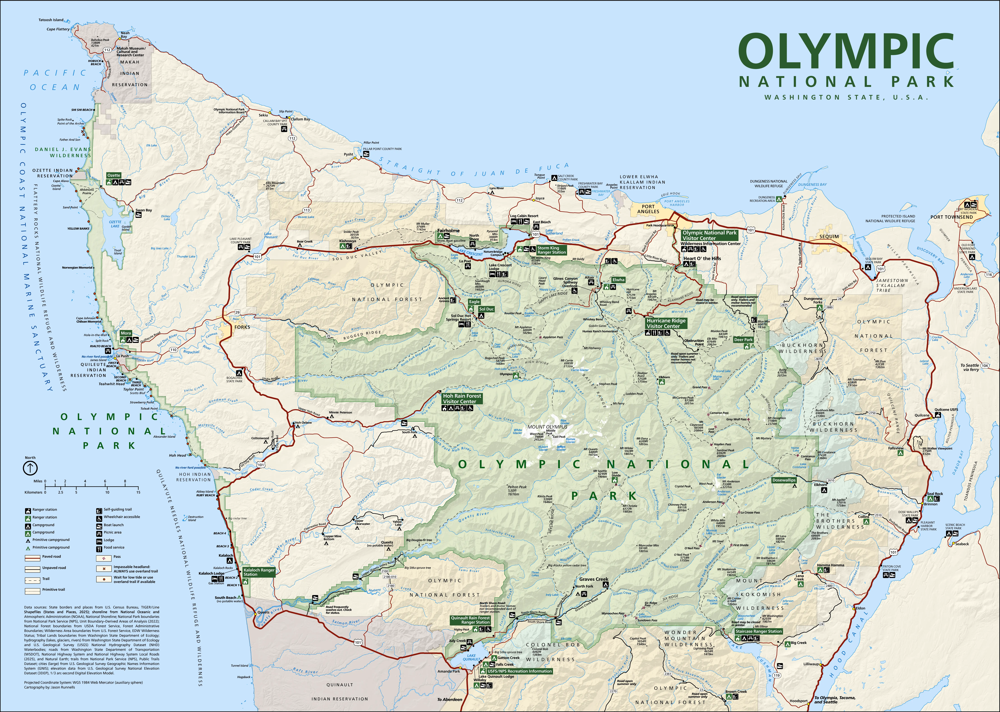

Jason Runnells | March, 2026
This map presents Olympic National Park through a detailed recreation of its official cartographic style, combining terrain visualization with recreational and geographic features. Shaded relief and subtle color variation are used to define elevation and landscape patterns, while roads, trails, and key locations are organized through a clear visual hierarchy. The design prioritizes balance and readability, resulting in a map that is both informative and visually cohesive.
You may view and download a full sized version of the map HERE
